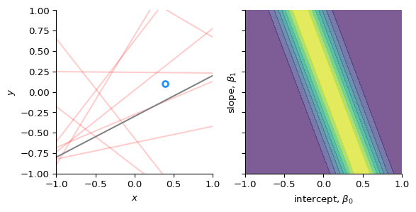
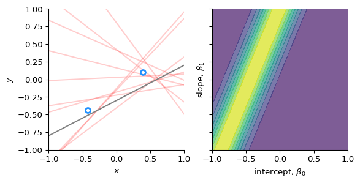

Before (i.e. “prior” to) observing any data, we belief that the intercept (\(\beta_{0}\)) and slope (\(\beta_{1}\)) can take many values, but they are centered around 0 with some uncertainty. We model this by assuming that they are derived from a normal distribution.
We observe our first data point, (\(x_{1}, y_{1}\))
We compute the likelihood of that data point given (\(\beta_{0}, \beta_{1}\)): \[
p(y_{1} \mid \beta_{0}, \beta_{1}, x_{1})
\]
Code
# Compute the likelihood of the first data point# for all combinations of slope and interceptlikelihood = norm.pdf(ys[0], loc=XX + YY * xs[0], scale=sigma)# Plot the data point, and the likelihood_, axs = plt.subplots(1, 2, sharex=True, sharey=True, figsize=(6, 3))axs[0].plot(xx, np.stack((np.ones(len(xx)), xx)).T @ betas.T, c="r", alpha=0.2)axs[0].plot(xx, b0 + b1 * xx, c="gray")axs[0].plot(xs[0], ys[0], "o", mfc="none", mec="dodgerblue", mew=2)axs[0].set(xlabel="$x$", ylabel="$y$")axs[1].contourf(XX, YY, likelihood, alpha=0.7)axs[1].set(xlabel="intercept, $\\beta_0$", ylabel="slope, $\\beta_1$")for ax in axs: ax.set(xlim=xlim, ylim=ylim)plt.show()

Update our belief
After (“posterior”) observing the data point, we can narrow down the uncertainties of the intercept and slope using Bayes’ rule: \[
p(\beta_{0}, \beta_{1} \mid y_{1}) \propto p(y_{1} \mid \beta_{0}, \beta_{1})\ p(\beta_{0}, \beta_{1})
\]
Code
def update_params(m_prior, C_prior, x_i, y_i, beta=25.0):"""Update the model parameters. Parameters ---------- m_prior : np.ndarray The prior for the mean. C_prior: np.ndarray The prior for the variance-covariance matrix. x_i, y_i : float The data point. beta : float The precision. Returns ------- m_post : np.ndarray The posterior of the mean. C_post : np.ndarray The posterior of the variance-covariance matrix. """# Design vector `phi` for a linear fit: [1, x] phi = np.array([1.0, x_i])# Compute the inverse of the prior covariance C_prior_inv = np.linalg.inv(C_prior)# Update the variance-covariance matrix C_post_inv = C_prior_inv + beta * np.outer(phi, phi) C_post = np.linalg.inv(C_post_inv)# Update the mean m_post = C_post @ (C_prior_inv @ m_prior + beta * y_i * phi)return m_post, C_postms, Cs = [], []for i, (x_i, y_i) inenumerate(zip(xs, ys)):if i ==0: m_post, C_post = update_params(m_prior=m, C_prior=C, x_i=x_i, y_i=y_i, beta=tau) ms.append(m_post) Cs.append(C_post)else: m_post, C_post = update_params( m_prior=ms[-1], C_prior=Cs[-1], x_i=x_i, y_i=y_i, beta=tau ) ms.append(m_post) Cs.append(C_post)_, axs = plt.subplots(1, 3, sharex=True, sharey=True, figsize=(9, 3))axs[0].contourf(XX, YY, multivariate_normal.pdf(pts, mean=m, cov=C))axs[1].contourf(XX, YY, likelihood)axs[2].contourf(XX, YY, multivariate_normal.pdf(pts, mean=ms[0], cov=Cs[0]))for ax in axs: ax.set(xlabel=f"intercept, $\\beta_0$", ylabel=f"slope, $\\beta_1$", xlim=xlim, ylim=ylim)axs[0].set_title("prior")axs[1].set_title("likelihood")axs[2].set_title("posterior")plt.show()
We observe our next data point, (\(x_{2}, y_{2}\))
We compute the likelihood of that data point given (\(\beta_{0}, \beta_{1}\)): \[
p(y_{2} \mid \beta_{0}, \beta_{1}, (x_{1}, y_{1}), x_{2})
\]
Code
# Compute the likelihood of the first data point# for all combinations of slope and interceptlikelihood = norm.pdf(ys[1], loc=XX + YY * xs[1], scale=sigma)# Plot the data point, and the likelihood_, axs = plt.subplots(1, 2, sharex=True, sharey=True, figsize=(6, 3))axs[0].plot(xx, np.stack((np.ones(len(xx)), xx)).T @ betas.T, c="r", alpha=0.2)axs[0].plot(xx, b0 + b1 * xx, c="gray")axs[0].plot(xs[:2], ys[:2], "o", mfc="none", mec="dodgerblue", mew=2)axs[0].set(xlabel="$x$", ylabel="$y$")axs[1].contourf(XX, YY, likelihood, alpha=0.7)axs[1].set(xlabel="intercept, $\\beta_0$", ylabel="slope, $\\beta_1$")for ax in axs: ax.set(xlim=xlim, ylim=ylim)plt.show()

Update our beliefs
We update our beliefs using the prior and the likelihood
Bishop, Christopher M. 2006. “Chapter 3: Linear Models for Regression.” In Pattern Recognition and Machine Learning, 137–78. Springer Science+Business Media, LLC.
Bruijn, Sjoerd M., and Jaap H. van Dieën. 2018. “Control of Human Gait Stability Through Foot Placement.”Journal of The Royal Society Interface 15 (143): 20170816. https://doi.org/10.1098/rsif.2017.0816.
Lang, Charlotte, Deepak K. Ravi, Sjoerd M. Bruijn, Jeffrey M. Hausdorff, Jaap H. van Dieën, and Anina Moira van Leeuwen. 2026. “How Do We Tread? Differences in Stability-Related Foot Placement Control Between Overground and Treadmill Walking in Young Adults.”PLOS One 21 (3): e0344704. https://doi.org/10.1371/journal.pone.0344704.